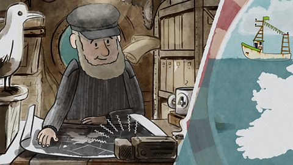

A well-worn cliché about the British is that they are a 'proud seafaring nation'. One popular argument that seemingly supports this is the abundance of English idioms that derive from life on the open seas. However, whether this is convincing evidence of a continued bond with the sea is debatable. Phrases like 'cut and run' and 'learning the ropes' are so ingrained in modern usage that most people are probably ignorant of their roots. Those interested in Britain's relationship with the sea should explore other aspects of popular culture for valuable insights.
Top of this list may well be the national shipping forecast, of all things. Advising listeners of storm warnings and providing detailed weather reports of the coastal waters surrounding the UK, this meteorological report has been broadcast over the radio waves for more than one hundred and fifty years. It clearly performs a vital function for the relatively small proportion of the population that can make sense of the specialist terminology used in the broadcast, and who rely on it to protect them. Yet, curiously, the expressions used in these bulletins appear on commercial products, including posters, cups and t-shirts, and have even found their way into song lyrics by some of the UK's most famous bands. The popularity of the programme now extends far beyond its intended audience, reaching those for whom it serves no obvious practical purpose.
That this broadcast is held in such high regard may seem absurd. Nevertheless, interest in the programme is undeniable. Public outcry and political debate have followed attempts to introduce even minor changes to the programme's format. Understanding the shipping forecast as a cultural phenomenon has been a source of interest for many researchers. Scholars have drawn on a diverse range of academic disciplines, including sociology, media studies and psychology, to shed light on the mainstream appeal of such a specialist programme. Undoubtedly, there is much to be gained from this multidisciplinary approach. However, most research remains focused on the narrow theme of the sea and sailing. These works portray the shipping forecast as the cultural embodiment of the nation's innate affinity for anything maritime.
What follows from this is that most scholarly work on the shipping forecast largely prioritises the concept of heritage. The main argument is that listeners tune in for a fond reminder of past times. Given that the UK's ship-building traditions also attract media attention and even tourism revenue, this argument may seem at least partially attractive. Furthermore, some schools continue to teach naval history as part of the curriculum. It may well be that, for at least some shipping forecast fans, having background historical knowledge enhances listeners' appreciation of the programme. However, this does not entirely explain why the shipping forecast resonates with as many people as it does. After all, unfamiliarity with British history is by no means an obstacle to enjoying the shipping forecast. If it were, why then does the programme attract global audiences?
Thus, this book explores alternative interpretations. Of course, one must never lose sight of the fact that, first and foremost, the programme's main function is to inform. Nevertheless, the way the specialist data are presented in the shipping forecast is unlike any other weather report. Its unique sentence patterns and rhythms are both difficult to understand yet at the same time soothing. With this in mind, I explore in this book the poetic qualities of the shipping forecast. Expanding on articles I have previously published on the therapeutic qualities of oral communication, I argue that poetry is the key to understanding the shipping forecast's appeal. It is surely no coincidence that many listeners tucked up in their beds rely on the calm and gentle rhythm of the bulletins to help them sleep at night.
Another assumption is challenged in this book, namely that the shipping forecast is an entirely British invention. It developed from its nineteenth-century origins thanks, in no small part, to pioneering navigational work by an American sailor. This, in combination with an international agreement signed in Brussels in 1853, enabled important shipping data to be shared. But far from spoiling its alluring sense of mystery, I hope that uncovering the truth will strengthen readers' appreciation for this wonderful programme.
